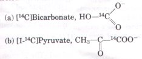
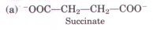
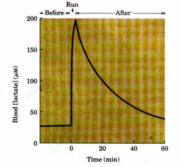
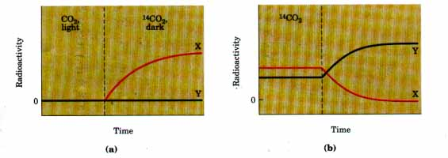

Gluconeogenesis is the formation of carbohydrate from noncarbohydrate precursors, the most important of which are pyruvate, lactate, and alanine. In vertebrates, gluconeogenesis in the liver and kidney provides glucose for use by the brain, muscle, and erythrocytes. Like all biosynthetic pathways, gluconeogenesis proceeds by an enzymatic route that differs from the corresponding catabolic pathway, is independently regulated, and requires ATP. The biosynthetic pathway from pyruvate to glucose occurs in all organisms. It employs seven of the glycolytic enzymes, which function reversibly. Three irreversible steps in the glycolytic pathway cannot be used in gluconeogenesis in the cell, and these are bypassed by reactions catalyzed by nonglycolytic enzymes: conversion of pyruvate into phosphoenolpyruvate via oxaloacetate, involving several enzymes and two high-energy phosphate groups; dephosphorylation of fructose-1,6-bisphosphate by fructose-1,6-bisphosphatase; and dephosphorylation of glucose-6-phosphate by glucose-6phosphatase. The path from pyruvate to phosphoenolpyruvate varies somewhat depending upon whether lactate or pyruvate itself serves as the gluconeogenic precursor. Formation of one molecule of glucose from pyruvate requires four molecules of ATP and two of GTP. Three carbon atoms of each of the citric acid cycle intermediates and some or all carbons of many of the amino acids are convertible into glucose.
Gluconeogenesis in the liver is regulated at two major points: (1) the carboxylation of pyruvate by pyruvate carboxylase, which is stimulated by the allosteric effector acetyl-CoA, and (2) the dephosphorylation of fructose-1,6-bisphosphate by fructose-1,6-bisphosphatase, which is inhibited by fructose-2,6-bisphosphate and AMP and stimulated by citrate. Fructose-2,6-bisphosphate also stimulates the glycolytic enzyme phosphofructokinase-1 and is crucial to the balance between gluconeogenesis and glycolysis. The levels of fructose-2,6-bisphosphate are hormonally regulated in animals. Reciprocal regulation of gluconeogenesis and glycolysis prevents futile cycling with its accompanying loss of ATP energy.
Unlike animals, plants can convert acetyl-CoA derived from fatty acid oxidation into glucose. They do so by a combination of the glyoxylate and citric acid cycles and gluconeogenic enzymes, in reactions compartmented among the glyoxysomes, mitochondria, and cytosol.
Glycogen synthesis also proceeds via a pathway different from its breakdown. It requires conversion of glucose-1-phosphate into UDP-glucose, a sugar nucleotide. Sugar phosphates are activated and earmarked for a particular synthetic path by ester linkage of a nucleoside diphosphate to the anomeric carbon of the sugar. Glycogen synthase adds glucose units from UDP-glucose to the nonreducing end of the growing glycogen chain, forming (α1->4) links. A branching enzyme, glycosyl-(α1->6)transferase, is necessary to add (α1->6) branch points. The initiation of glycogen synthesis requires a primer protein called glycogenin. The synthesis and breakdown of glycogen are reciprocally regulated by hormone-dependent phosphorylation of glycogen synthase (inactivating it) and of glycogen phosphorylase (activating it).
In plants, triose phosphates can be condensed to hexose phosphates and polymerized to starch for storage within the chloroplast. Starch synthase catalyzes the addition of glucose units from ADP-glucose to starch by a mechanism similar to that of glycogen synthase. Alternatively, triose phosphates can pass into the cytosol via an antiporter and serve as precursors for sucrose synthesis. Sucrose-6-phosphate synthase, which condenses UDP-glucose with fructose-6-phosphate, is inhibited when sucrose accumulates in the cytosol. Starch synthesis is stimulated by sucrose accumulation.
Lactose synthesis in the lactating mammary gland is brought about by the α-lactalbumingalactosyl transferase (lactose synthase) enzyme complex, using UDP-galactose and glucose as substrates. The α-lactalbumin serves as a specificitymodifying subunit, whose formation is regulated by hormones promoting lactation.
In plant cells photosynthesis takes place in chloroplasts. In the CO2-fixing reactions of photosynthesis (the Calvin cycle), ATP and NADPH are used to reduce CO2 to form triose phosphates. The reactions required for CO2 fixation occur in three stages: the fixation reaction itself, catalyzed by the stromal enzyme ribulose-1,5-bisphosphate carboxylase/oxygenase (rubisco); the reduction of the resulting 3-phosphoglycerate to glyceraldehyde-3-phosphate, which can be used in the synthesis of hexoses or in glycolysis; and the regeneration of ribulose-1,5-bisphosphate from triose phosphates.
Rubisco condenses CO2 with the five-carbon acceptor ribulose-1,5-bisphosphate, then hydrolyzes the resulting hexose into two molecules of 3-phosphoglycerate. Stromal isozymes of the glycolytic enzymes, acting in the "reverse" direction, catalyze reduction of 3-phosphoglycerate to glyceraldehyde-3-phosphate; each molecule reduced requires one ATP and one NADPH. Finally, stromal enzymes including transketolase and aldolase rearrange the carbon skeletons of triose phosphates, generating a series of intermediates of three, four, five, six, and seven carbons and yielding pentose phosphates. The pentose phosphates are converted to ribulose-5-phosphate, then phosphorylated to ribulose-1,5-bisphosphate to complete the Calvin cycle. The energetic cost of fixing three CO2 into triose phosphate is nine ATP and six NADPH.
An antiport system in the inner chloroplast membrane exchanges Pi in the cytosol for 3-phosphoglycerate or dihydroxyacetone phosphate produced by CO2 fixation in the stroma. Dihydroxyacetone phosphate oxidation in the cytosol generates ATP and NADH, moving ATP and reducing equivalents from the chloroplast to the cytosol.
Rubisco is regulated by covalent modification and by a natural transition-state analog. Other enzymes of the Calvin cycle are inhibited by lightinduced processes. Gluconeogenesis and glycolysis are regulated in plants by fructose-2,6-bisphosphate, the level of which varies inversely with the rate of photosynthesis: as the photosynthetic rate increases, fructose-2,6-bisphosphate levels fall and gluconeogenesis is activated.
Photorespiration wastes photosynthetic energy in C3 plants by forming and oxidizing phosphoglycolate, a product of the oxygenation of ribulose-1,5-bisphosphate by rubisco. In C4 plants a pathway exists to avoid photorespiration; CO2 is first fixed in mesophyll cells into a four-carbon compound, which passes into bundle-sheath cells and releases CO2 in high concentrations. This CO2 is fixed in the bundle-sheath cells by rubisco, and the remaining reactions of the Calvin cycle occur as in C3 plants.
Gluconeogenesis
Hers, H.G. & Hue, L. (1983) Gluconeogenesis and related aspects of glycolysis. Annu. Rev. Biochem. 52, 617-653.
Hue, L. (1987) Gluconeogenesis and its regulation. Diabetes
Metczb. Reu. 3, 111-126.
Pilkis, S.J., El-Maghrabi, M.R., & Claus, T.H. (1988)
Hormonal regulation of hepatic gluconeogenesis and glycolysis.
Annu. Rev. Biochem. 57, 755-783.
Polysaccharide Synthesis
Akazawa, T. & Okamoto, K. (1980) Biosynthesis and metabolism of sucrose. In The Biochemistry of Plants: A Comprehensiue Treatise, Vol. 3: Carbohydrates: Structure and Function (Preis, J., ed), pp. 199-220, Academic Press, Inc., New York.
Ap Rees, T. (1980) Integration of pathways of synthesis and degradation of hexose phosphates. In The Biochemistry of Plants: A Comprehensiue Treatise, Vol. 3: Carbohydrates: Structure and Function (Preis, J., ed), pp. 1-42, Academic Press, Inc., New York.
Beck, E. & Ziegler, P. (1989) Biosynthesis and degradation of starch in higher plants. Annu. Reu. Plant Physiol. Plant Mol. Biol. 40, 95-117.
Feingold, D.S. & Avigad, G. (1980) Sugar nucleotide transformations in plants. In The Biochemistry of Plants: A Comprehensiue Treatise, Vol. 3: Carbohydrates: Structure and Function (Preis, J., ed), pp. 101-170, Academic Press, Inc., New York.
Geddes, R. (1986) Glycogen: a metabolic viewpoint. Biosci. Rep. 6, 415-428.
Leloir, L.F. (1971) Two decades of research on the biosynthesis of saccharides. Science 172, 12991303.Leloir's Nobel czddress, including a discussion of the role of sugar nucleotides in metabolism.
Nuttall, F.Q., Gilboe, D.P., Gannon, M.C., Niewoehner, C.B., & Tan, A.W.H. (1988) Regulation of glycogen synthesis in the liver. Am. J. Med. 85, Supplement 5A, 77-85.
Preis, J. & Levi, C. (1980) Starch biosynthesis and degradation. In The Biochemistry of Plants: A Comprehensive Treatise, Vol. 3: Cczrbohydrates: Structure and Function (Preis, J., ed), pp. 371-423, Academic Press, Inc., New York.
Smythe, C. & Cohen, P. (1991) The discovery of glycogenin
and the priming mechanism for glycogen biogenesis. Eur. J.
Biochem. 200, 625-631.
Carbon Dioxide Fixation
Andersson, I., Knight, S., Schneider, G., Lindqvist, Y., Lundqvist, T., Branden, C.-I., & Lorimer, G.H. (1989) Crystal structure of the active site of ribulose-bisphosphate carboxylase. Nnture 337, 229-234.
Edwards, G.E. & Huber, S.C. (1981) The C4 pathway. In The Biochemistry of Plants: A Comprehensive Treatise, Vol. 8: Photosynthesis (Hatch, M.D. & Boardman, N.K., eds), pp. 273-281, Academic Press, Inc., New York.
Halliwell, B. (1984) Chloroplast Metabolism: The Structure and Function of Chloroplczsts in Green Leaf Cells, Clarendon Press, Oxford.
Hoober, J.K. (1984) Chloroplasts, Plenum Press, New York.
Horecker, B.L. (1976) Unravelling the pentose phosphate pathway. InReflections on Biochemistry (Kornberg, A., Cornudella, L., Horecker, B.L., & Oro, J., eds), pp. 65-72, Pergamon Press, Inc., Oxford.
Huber, S.C. (1986) Fructose 2,6-bisphosphate as a regulatory metabolite in plants. Annu. Reu. Plant Physiol. 39, 233-246.
Husic, D.W., Husic, H.D., & Tolbert, N.E. (1987) The oxidative photosynthetic carbon cycle or C2 cycle. CRC Crit. Reu. Plant Sci. 5, 45-100.
Lorimer, G.H. & Andrews, T.J. (1981) The C2 chemo- and photorespiratory carbon oxidation cycle. In The Biochemistry of Plants: A Comprehensiue Treatise, Vol. 8: Photosynthesis (Hatch, M.D. & Boardman, N.K., eds), pp. 329-374, Academic Press, Inc., New York.
Miziorko, H.M. & Lorimer, G.H. (1982) Ribulose1,5-bisphosphate carboxylase-oxygenase. Annu. Reu. Biochem. 52, 507-535.
Portis, A.R., Jr. (1990) Rubisco activase. Biochim. Biophys. Acta 1015, 15-28.
Robinson, S.P. & Walker, D.A. (1981) Photosynthetic carbon reduction cycle. In The Biochemistry of Plants: A Comprehensiue Treatise. Vol. 8: Photosynthesis (Hatch, M.D. & Boardman. '..K., eds), pp. 193-236, Academic Press, Inc., New York.
Schneider, G., Lindqvist, Y., BrandPa, C.-I., & Lorimer, G. (1986) Three-dimensional structure of ribulose-1,5-bisphosphate carboxylase/osygenase from Rhodospirillum rubrum at 2.9 A resolution. EMBO J. 5, 3409-3415.
Wood, T. (1985) The Pentose Phosphate Pathway, Academic Press, Inc., Orlando, FL.
Woodrow, I.E. & Berry, J.A. (1988) Enzymatic regulation of photosynthetic C02 fixation in C3 plants. Annu. Reu. Plant Physiol. Plant Mol. Biol. 39, 533-594.
1. Role of Oxidatiue Phosphorylation in Gluconeogenesis Is it possible to obtain a net synthesis of glucose from pyruvate if the citric acid cycle and oxidative phosphorylation are totally inhibited?
2. Pathway of Atoms in Gluconeogenesis A liver extract capable of carrying out all the normal metabolic reactions of the liver is briefly incubated in separate experiments with the following 14Clabeled precursors:

Trace the pathway of each precursor through gluconeogenesis. Indicate the location of 14C in all intermediates of the process and in the product, glucose.
3. Pathway of CO2 in Gluconeogenesis In the first bypass step in gluconeogenesis, the conversion of pyruvate to phosphoenolpyruvate, pyruvate is carboxylated by pyruvate carboxylase to oxaloacetate and is subsequently decarboxylated by PEP carboxykinase to yield phosphoenolpyruvate. The observation that the addition of CO2 is directly followed by the loss of CO2 suggests that 14C of 14CO2 would not be incorporated into PEP, glucose, or any of the intermediates in gluconeogenesis. However, it has been found that if rat liver slices synthesize glucose in the presence of 14CO2, 14C slowly appears in PEP and eventually appears in C-3 and C-4 of glucose. How does the 14C label get into PEP and glucose? (Hint: During gluconeogenesis in the presence of 14CO2, several of the four-carbon citric acid cycle intermediates also become labeled.)
4. Regulation of Fructose-1,6-Bisphosphatase and Phosphofructohinase-1 What are the effects of increasing concentrations of ATP and AMP on the catalytic activities of fructose-1,6-bisphosphatase and phosphofructokinase-1? What are the consequences of these effects on the relative flow of metabolites through gluconeogenesis and glycolysis?
5. Glucogenic Substrates A common procedure for determining the effectiveness of compounds as precursors of glucose in mammals is to fast the animal until the liver glycogen stores are depleted and then administer the substrate in question. A substrate that leads to a net increase in liver glycogen is termed glucogenic because it must first be converted to glucose-6-phosphate. Show by means of known enzymatic reactions which of the following substances are glucogenic:

(b) O H O H O H | | | Glycerol C H2 - C H - C H2
(c) O || Acetyl-CoA CH3- C -S-CoA
(d) O || Pyruvate CH3- C -COO- (e) CH3-CH2-CH2-COO~ Butyrate
6. Blood Lactate Levels during Vigorous Exercise The concentration of lactate in blood plasma before, during, and after a 400 m sprint are shown below.

(a) What causes the rapid rise in lactate concentration?
(b) What causes the decline in lactate concentration after completion of the run? Why does the decline occur more slowly than the increase?
(c) Why is the concentration of lactate not zero during the resting state?
7. Excess O2 Uptake during Gluconeogenesis Lactate absorbed by the liver is converted to glucose. This process requires the input of 6 mol of ATP for every mole of glucose produced. The extent of this process in rat liver slices can be monitored by administering [14C]lactate and measuring the amount of [14C]glucose produced. Because the stoichiometry of O2 consumption and ATP production is known (Chapter 18), we can predict the extra O2 consumption above the normal rate when a given amount of lactate is administered. The extra amount of OZ necessary for the synthesis of glucose from lactate, however, when actually measured is always higher than predicted by known stoichiometric relationships. Suggest a possible explanation for this observation.
8. At What Point Is Glycogen Synthesis Regulated? Explain how the two following observations identify the point of regulation in the synthesis of glycogen in skeletal muscle:
(a) The measured activity of glycogen synthase in resting muscle, expressed in micromoles of UDP-glucose used per gram per minute, is lower than the activity of phosphoglucomutase or UDPglucose pyrophosphorylase, each measured in terms of micromoles of substrate transformed per gram per minute.
(b) Stimulation of glycogen synthesis leads to a small decrease in the concentrations of glucose-6-phosphate and glucose-1-phosphate, a large decrease in the concentration of UDP-glucose, but a substantial increase in the concentration of UDP.
9. What Is the Cost of Storing Glucose as Glycogen? Write the sequence of steps and the net reaction required to calculate the cost in number of ATPs of converting cytosolic glucose-6-phosphate into glycogen and back into glucose-6-phosphate. What fraction of the maximum number of ATPs that are available from complete catabolism of glucose-6phosphate to CO2 and H2O does this cost represent?
10. Identification of a Defectiue Enzyme in Carbohydrate Metabolism A sample of liver tissue was obtained post mortem from the body of a patient believed to be genetically deficient in one of the enzymes of carbohydrate metabolism. A homogenate of the liver sample had the following characteristics: (1) it degraded glycogen to glucose-6-phosphate, (2) it was unable to make glycogen from any sugar or to utilize galactose as an energy source, and (3) it synthesized glucose-6-phosphate from lactate. Which of the following three enzymes was deficient?
(a) Glycogen phosphorylase
(b) Fructose-1,6-bisphosphatase
(c) UDP-glucose pyrophosphorylase Give reasons for your choice.
11. Ketosis in Sheep The udder of a ewe uses almost 80% of the total glucose synthesized by the animal. The glucose is used for milk production, principally in the synthesis of lactose and of glycerol-3-phosphate, used in the formation of milk triacylglycerols. During the winter when food quality is poor, milk production decreases and the ewes sometimes develop ketosis, that is, increased levels of plasma ketone bodies. Why do these changes occur? A standard treatment for this condition is the administration of large doses of propionate (which is readily converted to succinyl-CoA in ruminants). How does this treatment work?
12. Adaptatdon to Galactosemia Galactosemia is a pathological condition in which there is deficient utilization of galactose derived from lactose in the diet. One form of this disease is due to the absence of the enzyme UDP-glucose: galactose-1-phosphate uridylyltransferase. If an individual survives the disease in early life, some capacity to metabolize ingested galactose may develop in later life, because of increased production of the enzyme UDPgalactose pyrophosphorylase, which catalyzes the reaction
Galactose-1-phosphate + UTP ===== UDP-galactose + PPi
How does the presence of this enzyme increase the capacity of such individuals to metabolize galactose?
13. Phases of Photosynthesis When a suspension of green algae is illuminated in the absence of CO2 and then incubated with 14CO22 in the dark, 14CO2 is converted into [14C]glucose for a brief time. What is the significance of this observation with regard to the CO2 fixation process and how is it related to the light reactions of photosynthesis? Why does the conversion of 14CO2 into [14C]glucose stop after a brief time?
l4.Identification of Key Intermediates in CO2 Fixation Calvin and his colleagues used the unicellular green alga Chlorella to study the carbon fixation reactions of photosynthesis. In their experiments 14CO2 was incubated with illuminated suspensions of algae under different conditions. They followed the time course of appearance of 14C in two compounds, X and Y, under two sets of conditions.

(a) Illuminated Chlorella were grown on unlabeled CO2; then the lights were turned off, and 14CO2 was added (vertical dashed line in graph a below). Under these conditions X was the first compound to become labeled with 14C. Compound Y was unlabeled.
(b) Illuminated Chlorella cells were grown in l4CO2. Illumination was continued until all the 14CO2 had disappeared (vertical dashed line in graph b below). Under these conditions compound X became labeled quickly but lost its radioactivity with time, whereas compound Y became more radioactive with time.
Suggest the identities ot x ana r dasea on your understanding of the Calvin cycle.
15. Pathway of CO2 Fixation in Maize If a maize (corn) plant is illuminated in the presence of 14CO2,after about 1 s more than 90% of all the radioactivity incorporated in the leaves is found in the C-4 atoms of malate, aspartate, and oxaloacetate. Only after 60 s does 14C appear in the C-1 atom of 3-phosphoglycerate. Explain.
16. Chemistry of Malic Enzyme: Variation on a Theme Malic enzyme, found in the bundle-sheath cells of C4 plants, carries out a reaction that has a counterpart in the citric acid cycle. What is the analogous reaction? Explain.
17. Sucrose and Dental Caries The most prevalent infection in humans worldwide is dental caries, which stems from the colonization and destruction of tooth enamel by a variety of acidifying microorganisms. These organisms synthesize and live within a water-insoluble network of dextrans, called dental plaque, composed of (α1->6)-linked polymers of glucose with many (α->3) branch points. Polymerization of dextran requires dietary sucrose, and the reaction is catalyzed by a bacterial enzyme, dextran-sucrose glucosyltranferase.
(a) Write the overall reaction for dextran polymerization.
(b) In addition to providing a substrate for the formation of dental plaque, how does dietary sucrose also provide oral bacteria with an abundant source of metabolic energy?
18. Regulation of Carbohydrate Synthesis in Plants Sucrose synthesis occurs in the cytosol, and starch synthesis occurs in the chloroplast stroma; yet both reactions are intricately balanced.
(a) What factors shift the reactions in favor of starch synthesis?
(b) What factors shift the reactions to favor sucrose synthesis?
(c) Given that these two synthetic pathways occur in separate cellular compartments, what enables the two processes to influence each other?